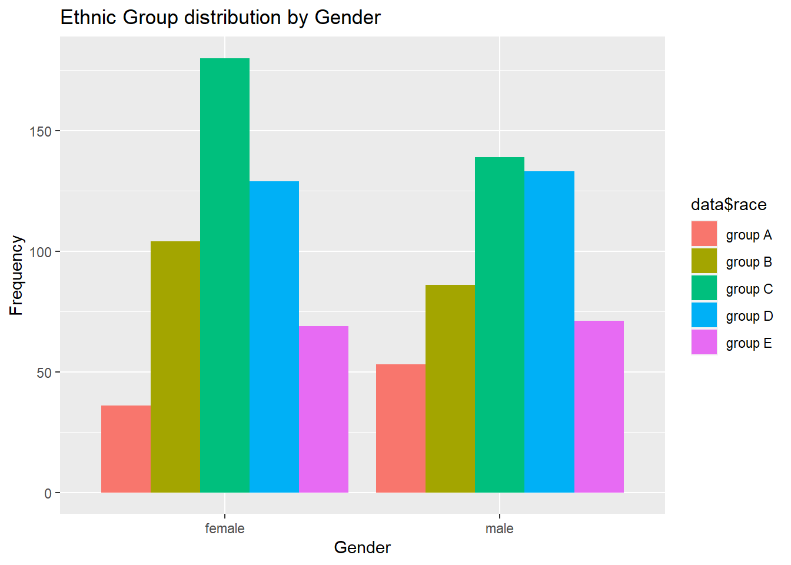
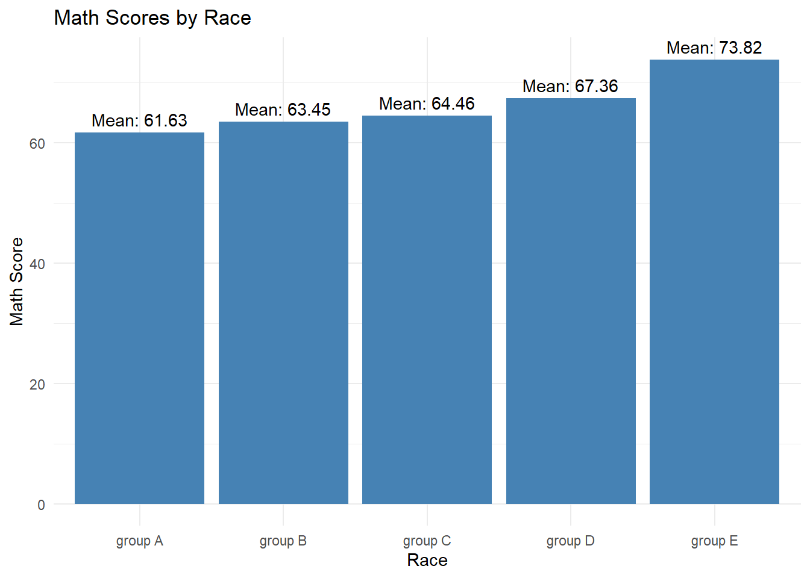
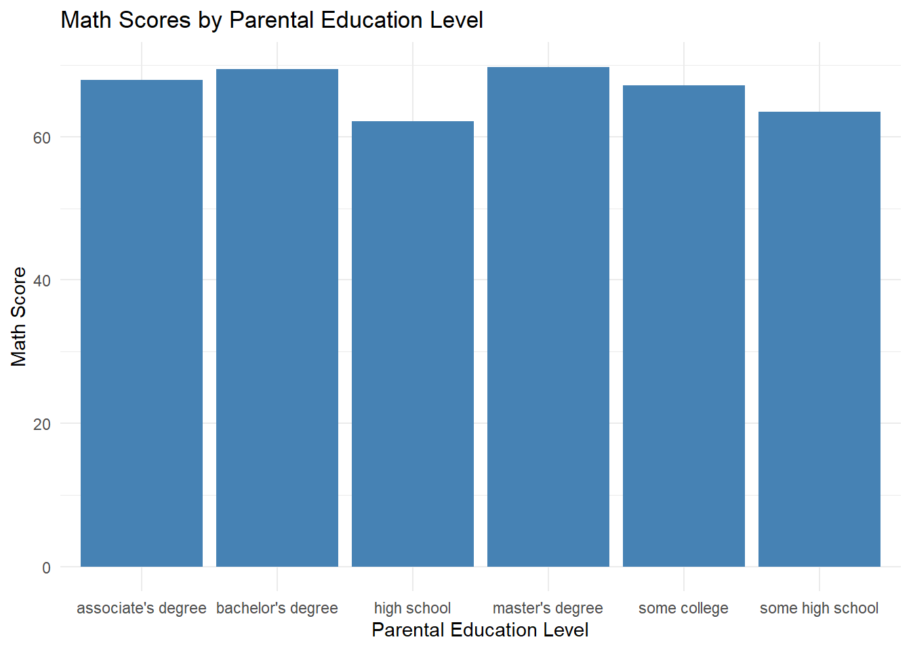
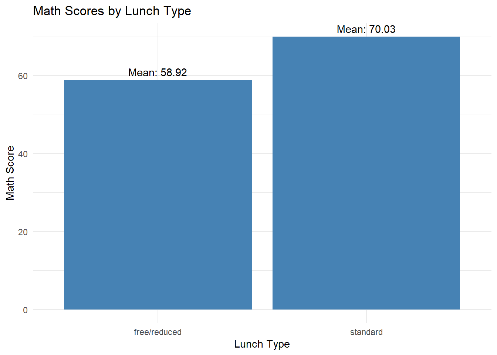

Code
suppressWarnings(suppressPackageStartupMessages({
library(tidyverse)
library(ggplot2)
library(dplyr)
library(fBasics)
library(kableExtra)
library(funModeling)
library(plotly)
library(MASS)
library(corrplot)
}))Can the reading and writing scores, along with gender, be used as predictors for students math exam scores?
The math exam scores of students are positively associated with their reading and writing scores.
The math exam scores of male students are higher than those of female students.
suppressWarnings(suppressPackageStartupMessages({
library(tidyverse)
library(ggplot2)
library(dplyr)
library(fBasics)
library(kableExtra)
library(funModeling)
library(plotly)
library(MASS)
library(corrplot)
}))data <- read_csv("_data/S.csv", show_col_types = FALSE)
names_columns <- c("gender","race","parent_education","lunch","test_prep","math_score","reading_score","writing_score")
colnames(data) <- names_columnsThe “Students Performance in Exams” dataset contains information about the marks obtained by students in different subjects. The dataset consists of 1000 rows and 8 features.
The categorical features in the dataset include:
Gender: Indicates whether the student is female or male. Race/Ethnicity: Represents the group to which the student belongs, categorized as Group A, Group B, Group C, Group D, or Group E. Parental Level of Education: Reflects the educational level of the student’s parents, such as associate’s degree, bachelor’s degree, high school, etc. Lunch: Specifies the type of lunch provided to the student, categorized as either free/reduced or standard. Test Preparation Course: Indicates whether the student completed a test preparation course or not.
The numerical features in the dataset are:
Math Score: Represents the marks obtained by the student in the math subject. Reading Score: Represents the marks obtained by the student in the reading subject. Writing Score: Represents the marks obtained by the student in the writing subject. All the scores in the dataset are measured on a scale of 0 to 100.
The dataset provides valuable insights into the performance of students in exams across various subjects. By analyzing this data, we can explore the relationships between different features and understand the factors that influence students’ academic achievements.
summary(data) gender race parent_education lunch
Length:1000 Length:1000 Length:1000 Length:1000
Class :character Class :character Class :character Class :character
Mode :character Mode :character Mode :character Mode :character
test_prep math_score reading_score writing_score
Length:1000 Min. : 0.00 Min. : 17.00 Min. : 10.00
Class :character 1st Qu.: 57.00 1st Qu.: 59.00 1st Qu.: 57.75
Mode :character Median : 66.00 Median : 70.00 Median : 69.00
Mean : 66.09 Mean : 69.17 Mean : 68.05
3rd Qu.: 77.00 3rd Qu.: 79.00 3rd Qu.: 79.00
Max. :100.00 Max. :100.00 Max. :100.00 head(data, 10)str(data)spc_tbl_ [1,000 × 8] (S3: spec_tbl_df/tbl_df/tbl/data.frame)
$ gender : chr [1:1000] "female" "female" "female" "male" ...
$ race : chr [1:1000] "group B" "group C" "group B" "group A" ...
$ parent_education: chr [1:1000] "bachelor's degree" "some college" "master's degree" "associate's degree" ...
$ lunch : chr [1:1000] "standard" "standard" "standard" "free/reduced" ...
$ test_prep : chr [1:1000] "none" "completed" "none" "none" ...
$ math_score : num [1:1000] 72 69 90 47 76 71 88 40 64 38 ...
$ reading_score : num [1:1000] 72 90 95 57 78 83 95 43 64 60 ...
$ writing_score : num [1:1000] 74 88 93 44 75 78 92 39 67 50 ...
- attr(*, "spec")=
.. cols(
.. gender = col_character(),
.. `race/ethnicity` = col_character(),
.. `parental level of education` = col_character(),
.. lunch = col_character(),
.. `test preparation course` = col_character(),
.. math = col_double(),
.. reading = col_double(),
.. writing = col_double()
.. )
- attr(*, "problems")=<externalptr> anyNA(data)[1] FALSEfreq(data$gender)Warning: The `<scale>` argument of `guides()` cannot be `FALSE`. Use "none" instead as
of ggplot2 3.3.4.
ℹ The deprecated feature was likely used in the funModeling package.
Please report the issue at <https://github.com/pablo14/funModeling/issues>.
It can be observed that among the students included, approximately 51.8% of them are female students. This indicates that the majority of the students in the dataset are female.
On the other hand, approximately 48.2% of the students in the dataset are male students. This suggests that male students make up a slightly smaller portion of the total student population compared to female students.
Overall, the dataset represents a relatively balanced distribution in terms of gender, with a slightly higher proportion of female students.
freq(data$race)It can be observed that Group C is the most prevalent race/ethnicity among the students. This suggests that a larger number of students in the dataset belong to Group C compared to the other race/ethnicity categories while Group A is the least represented race/ethnicity among the students.
freq(data$parent_education)
Above chart reveal the distribution of parent education levels among the students in the dataset. Out of the total number of students, 226 individuals (22.6%) reported having their parents pursued some college education
freq(data$lunch)Standard Price Lunch: 64.5% Approximately 64.5% of the students in the dataset eat lunch at the standard price. This indicates that the majority of the students opt for the standard-priced lunch option.
Free/Reduced Lunch: 35.5% About 35.5% of the students in the dataset eat lunch at a free or reduced price. This suggests that a smaller portion of the students qualify for and choose the free or reduced lunch option.
ggplot(data,aes(data$gender, fill=data$race))+
geom_bar(position=position_dodge())+
ggtitle("Ethnic Group distribution by Gender")+
xlab("Gender")+
ylab("Frequency")
I have compared the gender with their race type and its interesting to see that the majority of students in the dataset are from group C followed by group D race.
So, keeping all the analysed information in mind i want to conduct the correlation analysis for the variables Math, Reading and Writing scores and see if there is any correlation between the variables.
profiling_num(data)plot_num(data)
Based on our hypothesis that the math exam scores of students are positively associated with their reading and writing scores, the findings from the profiling analysis and also plot chart provide evidence supporting this hypothesis. The average scores for math, reading, and writing are relatively close, indicating a positive association between these subjects.
# scatter plot
ggplot(data, aes(x = reading_score, y = writing_score, color = math_score)) +
geom_point() +
labs(x = "Reading Score", y = "Writing Score",
title = "Math Scores based on Reading and Writing Scores") +
theme_minimal()# Calculate mean math score by gender
mean_scores <- data %>%
group_by(gender) %>%
summarise(mean_math_score = mean(math_score))
# bar chart
ggplot(mean_scores, aes(x = gender, y = mean_math_score)) +
geom_bar(stat = "identity", fill = "steelblue") +
labs(x = "Gender", y = "Mean Math Score",
title = "Mean Math Scores by Gender") +
theme_minimal() +
geom_text(aes(label = round(mean_math_score, 2)), vjust = -0.5, color = "black")The chart reveals that the mean math score for males is approximately 68.73, indicating a relatively higher average performance in math compared to females . On the other hand,females have a mean math score of around 63.63, suggesting a slightly lower average performance in math compared to males . These findings highlight a gender-based difference in math scores, with males demonstrating a higher average math score compared to females.
# Calculate mean math score by race
mean_scores <- data %>%
group_by(race) %>%
summarise(mean_math_score = mean(math_score))
# bar chart
ggplot(data, aes(x = race, y = math_score)) +
geom_bar(stat = "summary", fun = "mean", fill = "steelblue") +
labs(x = "Race", y = "Math Score",
title = "Math Scores by Race") +
theme_minimal() +
geom_text(data = mean_scores, aes(x = race, y = mean_math_score,
label = paste0("Mean: ", round(mean_math_score, 2))),
vjust = -0.5, color = "black")
These findings highlight the variations in math scores across different race categories, with Group E demonstrating the highest average score and Group A showing the lowest average score performance.
# bar chart
ggplot(data, aes(x = parent_education, y = math_score)) +
geom_bar(stat = "summary", fun = "mean", fill = "steelblue") +
labs(x = "Parental Education Level", y = "Math Score",
title = "Math Scores by Parental Education Level") +
theme_minimal()
Even thought there is a little difference in the math scores there is not significant difference based on their parents education level
library(ggplot2)
library(dplyr)
# Calculate mean math score by lunch type
mean_scores <- data %>%
group_by(lunch) %>%
summarise(mean_math_score = mean(math_score))
# bar chart
ggplot(data, aes(x = lunch, y = math_score)) +
geom_bar(stat = "summary", fun = "mean", fill = "steelblue") +
labs(x = "Lunch Type", y = "Math Score",
title = "Math Scores by Lunch Type") +
theme_minimal() +
geom_text(data = mean_scores, aes(x = lunch, y = mean_math_score,
label = paste0("Mean: ", round(mean_math_score, 2))),
vjust = -0.5, color = "black")
It is interesting to see the math score of students based on their lunch type. Students how are taking standard meal are performing better at math as compared to people taking free or reduced lunch option.
num_data <- data[, c( "math_score", "reading_score", "writing_score")]
m<-cor(num_data)
m math_score reading_score writing_score
math_score 1.0000000 0.8175797 0.8026420
reading_score 0.8175797 1.0000000 0.9545981
writing_score 0.8026420 0.9545981 1.0000000corrplot(m, method="circle", type='upper', tl.cex=0.8, tl.col = 'black')The correlation analysis reveals interesting insights into the relationships between math scores, reading scores, and writing scores. The strong positive correlation coefficient of 0.8176 between math_score and reading_score suggests that students who excel in math also tend to perform well in reading. Similarly, the high correlation coefficient of 0.8026 between math_score and writing_score indicates a strong positive association, indicating that students who demonstrate proficiency in math often display strong writing skills as well. Furthermore, the very high correlation coefficient of 0.9546 between reading_score and writing_score highlights a robust positive relationship, indicating that students who excel in reading are highly likely to excel in writing.
Taken together, these findings provide substantial evidence supporting our hypothesis that math exam scores are positively associated with both reading and writing scores. These results suggest that students who demonstrate proficiency in one subject area are more likely to excel in the other subjects as well, reinforcing the idea of a positive relationship between math scores and reading/writing scores.
# T-test for math scores
ttest_math <- t.test(math_score ~ gender, data = data)
ttest_math
Welch Two Sample t-test
data: math_score by gender
t = -5.398, df = 997.98, p-value = 8.421e-08
alternative hypothesis: true difference in means between group female and group male is not equal to 0
95 percent confidence interval:
-6.947209 -3.242813
sample estimates:
mean in group female mean in group male
63.63320 68.72822 # One-way ANOVA for all three subjects
anova_scores <- aov(math_score + reading_score + writing_score ~ gender, data = data)
summary(anova_scores) Df Sum Sq Mean Sq F value Pr(>F)
gender 1 31297 31297 17.39 3.31e-05 ***
Residuals 998 1796315 1800
---
Signif. codes: 0 '***' 0.001 '**' 0.01 '*' 0.05 '.' 0.1 ' ' 1Based on the analysis conducted, we performed a Welch Two Sample t-test to examine the differences in math scores between male and female students. The results indicate that there is a statistically significant disparity in the mean math scores between the two groups (t = -5.398, df = 997.98, p-value = 8.421e-08). It was found that the mean math score for females (63.63) is significantly lower compared to males (68.73) with a 95% confidence interval ranging from -6.947209 to -3.242813.
Furthermore, we conducted a one-way ANOVA to explore the impact of gender on math, reading, and writing scores. The ANOVA results demonstrate a significant effect of gender on math scores (F = 17.39, p < 0.001). However, this analysis does not provide information regarding the relationship between math scores and reading/writing scores.
In summary, our analysis reveals a significant difference in math scores between male and female students, with males demonstrating higher performance in this subject compared to females. These findings highlight the influence of gender on academic achievement, particularly in the context of math
set.seed(123)
train_idx <- sample(nrow(data), nrow(data) * 0.7)
train_data <- data[train_idx, ]
test_data <- data[-train_idx, ]model1 <- lm(math_score ~ reading_score + writing_score, data = train_data)
predictions1 <- predict(model1, newdata = test_data)
rmse1 <- sqrt(mean((test_data$math_score - predictions1)^2))
r_squared1 <- summary(model1)$r.squared
rmse1[1] 8.753639r_squared1[1] 0.6630448This model includes reading score and writing score as predictors for math score. The root mean squared error (RMSE) for predicting math scores on the test data is approximately 8.75. The R-squared value, which represents the proportion of variance in math scores explained by the model, is approximately 0.663. This suggests that reading score and writing score collectively account for about 66.3% of the variation in math scores.
model2 <- lm(math_score ~ writing_score * reading_score + gender , data = train_data)
predictions2 <- predict(model2, newdata = test_data)
rmse2 <- sqrt(mean((test_data$math_score - predictions2)^2))
r_squared2 <- summary(model2)$r.squared
rmse2[1] 6.148844r_squared2[1] 0.8366321This model extends Model 1 by including an interaction term between writing score and reading score, as well as the gender variable. The RMSE for this model is approximately 6.15, indicating a slight improvement in prediction accuracy compared to Model 1. The R-squared value increases to approximately 0.837, suggesting that the addition of the interaction term and gender variable accounts for a higher proportion of the variation in math scores.
model3 <- lm(math_score ~ ., data = train_data)
predictions3 <- predict(model3, newdata = test_data)
rmse3 <- sqrt(mean((test_data$math_score - predictions3)^2))
r_squared3 <- summary(model3)$r.squared
rmse3[1] 5.697975r_squared3[1] 0.8774988summary(model3)
Call:
lm(formula = math_score ~ ., data = train_data)
Residuals:
Min 1Q Median 3Q Max
-15.6908 -3.3311 0.0567 3.2723 14.3230
Coefficients:
Estimate Std. Error t value Pr(>|t|)
(Intercept) -12.69377 1.50380 -8.441 < 2e-16 ***
gendermale 13.39247 0.43457 30.818 < 2e-16 ***
racegroup B 0.24651 0.84199 0.293 0.76979
racegroup C -0.08452 0.77853 -0.109 0.91358
racegroup D 0.16262 0.79821 0.204 0.83862
racegroup E 5.15433 0.87327 5.902 5.64e-09 ***
parent_educationbachelor's degree -0.53390 0.72488 -0.737 0.46166
parent_educationhigh school 1.34623 0.63690 2.114 0.03490 *
parent_educationmaster's degree -2.37927 0.90659 -2.624 0.00887 **
parent_educationsome college -0.06383 0.59119 -0.108 0.91405
parent_educationsome high school 1.16923 0.64611 1.810 0.07079 .
lunchstandard 3.02912 0.43865 6.906 1.14e-11 ***
test_prepnone 3.77531 0.45966 8.213 1.07e-15 ***
reading_score 0.22861 0.04978 4.592 5.22e-06 ***
writing_score 0.74989 0.05098 14.711 < 2e-16 ***
---
Signif. codes: 0 '***' 0.001 '**' 0.01 '*' 0.05 '.' 0.1 ' ' 1
Residual standard error: 5.253 on 685 degrees of freedom
Multiple R-squared: 0.8775, Adjusted R-squared: 0.875
F-statistic: 350.5 on 14 and 685 DF, p-value: < 2.2e-16This model includes all available variables as predictors for math score. The RMSE decreases further to approximately 5.70, indicating improved prediction accuracy compared to both Model 1 and Model 2. The R-squared value increases to approximately 0.877, indicating that this model explains approximately 87.7% of the variance in math scores when considering all available predictors.
str(data)spc_tbl_ [1,000 × 8] (S3: spec_tbl_df/tbl_df/tbl/data.frame)
$ gender : chr [1:1000] "female" "female" "female" "male" ...
$ race : chr [1:1000] "group B" "group C" "group B" "group A" ...
$ parent_education: chr [1:1000] "bachelor's degree" "some college" "master's degree" "associate's degree" ...
$ lunch : chr [1:1000] "standard" "standard" "standard" "free/reduced" ...
$ test_prep : chr [1:1000] "none" "completed" "none" "none" ...
$ math_score : num [1:1000] 72 69 90 47 76 71 88 40 64 38 ...
$ reading_score : num [1:1000] 72 90 95 57 78 83 95 43 64 60 ...
$ writing_score : num [1:1000] 74 88 93 44 75 78 92 39 67 50 ...
- attr(*, "spec")=
.. cols(
.. gender = col_character(),
.. `race/ethnicity` = col_character(),
.. `parental level of education` = col_character(),
.. lunch = col_character(),
.. `test preparation course` = col_character(),
.. math = col_double(),
.. reading = col_double(),
.. writing = col_double()
.. )
- attr(*, "problems")=<externalptr> AIC(model1,model2, model3)BIC(model1,model2, model3)When comparing the models using the Akaike Information Criterion (AIC) and Bayesian Information Criterion (BIC), lower values indicate better model fit.
Model 1: AIC = 5009.934, BIC = 5028.138 Model 2: AIC = 4507.172, BIC = 4534.478 Model 3: AIC = 4325.654, BIC = 4398.471
The AIC and BIC values for each model suggest that Model 3 has the best fit among the three models. However, adding gender to reading and writing score made the model better and fit. it is very near to the model3 which includes all the variables.
As the AIC and BIC scores are less compared to Model1 & Model2, Im choosing Model3 to perform Residual Diagnostics
plot(model3)As we can see the Residual Diagnosis plots above for Model3, in all the plots the red line fitted values are straight and linear accross all the plots indicating that the model is better fit.
library(stargazer)
Please cite as: Hlavac, Marek (2022). stargazer: Well-Formatted Regression and Summary Statistics Tables. R package version 5.2.3. https://CRAN.R-project.org/package=stargazer stargazer(model1, model2, model3, type = "text")
=============================================================================================================
Dependent variable:
---------------------------------------------------------------------------
math_score
(1) (2) (3)
-------------------------------------------------------------------------------------------------------------
reading_score 0.539*** 0.276*** 0.229***
(0.077) (0.077) (0.050)
gendermale 13.197*** 13.392***
(0.486) (0.435)
writing_score:reading_score 0.001
(0.001)
racegroup B 0.247
(0.842)
racegroup C -0.085
(0.779)
racegroup D 0.163
(0.798)
racegroup E 5.154***
(0.873)
parent_educationbachelor's degree -0.534
(0.725)
parent_educationhigh school 1.346**
(0.637)
parent_educationmaster's degree -2.379***
(0.907)
parent_educationsome college -0.064
(0.591)
parent_educationsome high school 1.169*
(0.646)
lunchstandard 3.029***
(0.439)
test_prepnone 3.775***
(0.460)
writing_score 0.304*** 0.553*** 0.750***
(0.073) (0.074) (0.051)
Constant 8.214*** -2.079 -12.694***
(1.631) (3.629) (1.504)
-------------------------------------------------------------------------------------------------------------
Observations 700 700 700
R2 0.663 0.837 0.877
Adjusted R2 0.662 0.836 0.875
Residual Std. Error 8.637 (df = 697) 6.022 (df = 695) 5.253 (df = 685)
F Statistic 685.762*** (df = 2; 697) 889.801*** (df = 4; 695) 350.484*** (df = 14; 685)
=============================================================================================================
Note: *p<0.1; **p<0.05; ***p<0.01In Model 1, we found that an increase in the reading score is linked to a higher math score. The coefficient for the reading score was statistically significant (p < 0.01) and had a positive value of 0.539. This suggests that students who perform better in reading tend to have higher math scores. Similarly, the coefficient for the writing score was also statistically significant (p < 0.01) with a positive value of 0.304. This implies that students who excel in writing also tend to have higher math scores.
When we examined Model 2, which includes additional variables, we observed that the coefficients for reading_score and writing_score remained statistically significant and positive. This finding reaffirms the results from Model 1, indicating a consistent relationship between reading, writing, and math scores. It suggests that students who perform well in both reading and writing are likely to have higher math scores.
In Model 3, where we considered all available variables, we found that the coefficients for reading_score and writing_score continued to be statistically significant and positive. This further supports our hypothesis that math scores are positively associated with both reading and writing scores. It suggests that students who demonstrate strong abilities in reading and writing are more likely to achieve higher math scores.
These findings provide evidence supporting our hypothesis that math exam scores are positively associated with reading and writing scores and that there is a gender difference in math performance, with males outperforming females.
In conclusion, our research focused on examining the factors influencing math scores among students. We analyzed a dataset containing information on various variables such as gender, race/ethnicity, parental education, lunch type, test preparation, and scores in reading and writing.
Our findings revealed several important insights. Firstly, gender played a significant role, with male students showing higher math scores compared to females.
The scores in reading and writing were strongly correlated with math scores. Higher scores in reading and writing were associated with higher math scores.
Additionally, the type of lunch and completion of a test preparation course were also found to have a positive impact on math scores. Students who had a standard lunch and completed a test preparation course tended to perform better in math.
Overall, our research suggests that reading and writing, gender, and lunch type are important factors influencing math scores among students.
It is important to note that this research was based on a specific dataset and may not capture all possible factors influencing math scores. Further research and exploration are recommended to gain a comprehensive understanding of the complex dynamics affecting students’ math performance.
Dataset : “Students Performance in Exams” Dataset. Retrieved from https://www.kaggle.com/datasets/spscientist/students-performance-in-exams
Johnson, R. A. (2010). Applied Multivariate Statistical Analysis (6th ed.). Pearson Education.
Field, A. (2013). Discovering Statistics Using R. SAGE Publications Ltd.
Wickham, H. (2016). ggplot2: Elegant Graphics for Data Analysis. Springer.